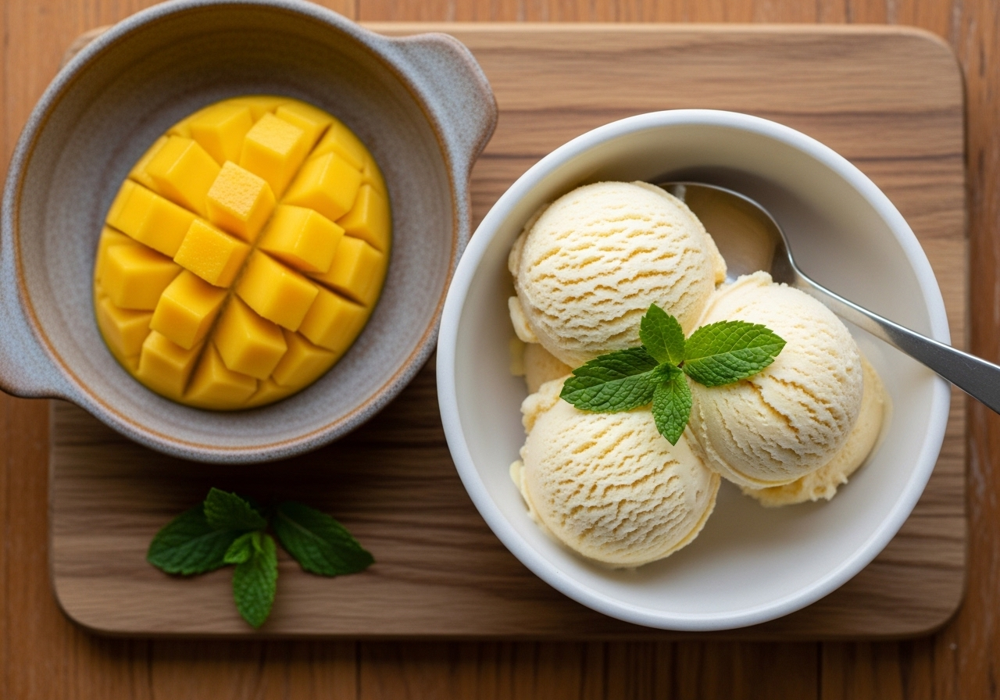

← Alle recepten

🍽 1 pint (4 porties)
⏱ Voorbereiding: 10 min
🔥 Bereiding: 24 uur
Σ Totaal: 24 uur 10 min
Ingrediënten
- 400 g mangopuree (van rijpe verse of ontdooide diepvriesmango, gepureerd)
- 250 g magere Griekse yoghurt (0%)
- 2 el honing
- 1 el limoensap
- Snufje zout
Bereiding
- Pureer de mango tot een gladde puree (blender of staafmixer).
- Klop de mangopuree, Griekse yoghurt, honing, limoensap en zout in een kom tot een egaal mengsel.
- Giet het mengsel in de Creami-pint tot maximaal de vullijn en vries minimaal 24 uur plat en waterpas in.
- Draai het ijs op de stand Lite Ice Cream (of Sorbet). Kruimelig? Draai nogmaals met Re-spin tot het romig is.